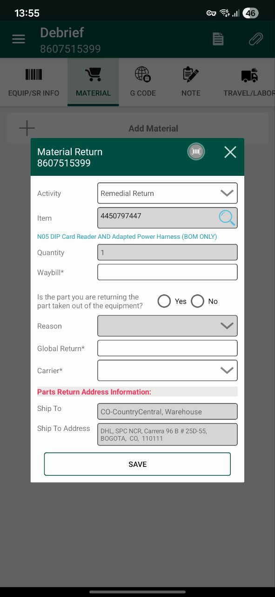
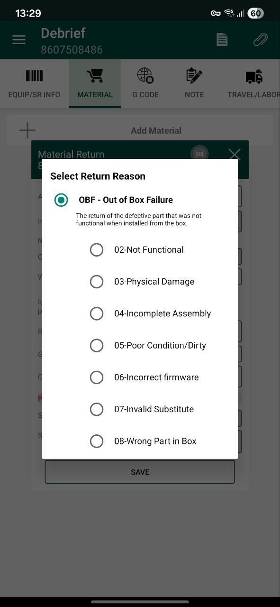
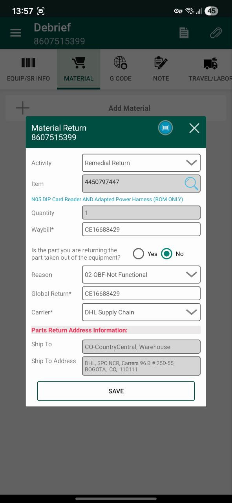
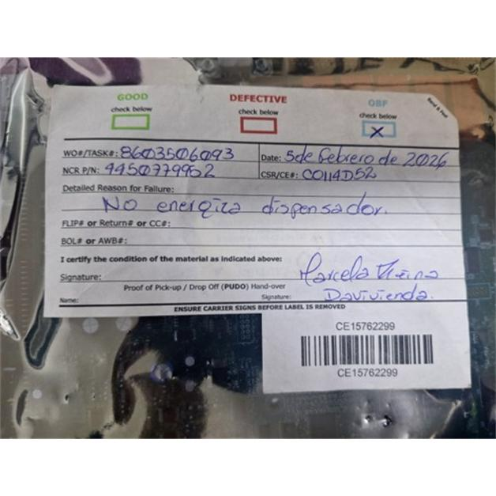
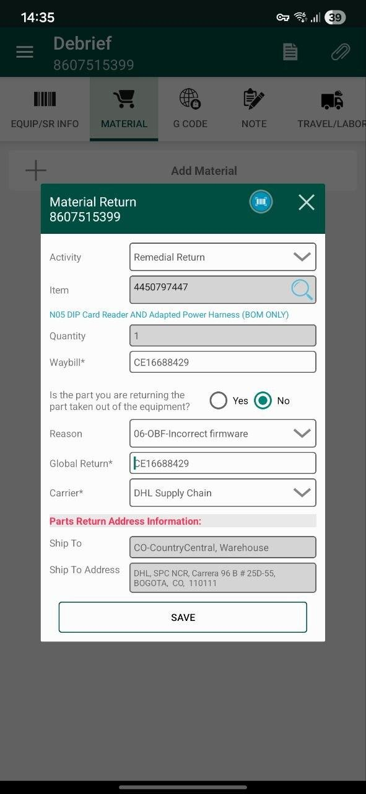
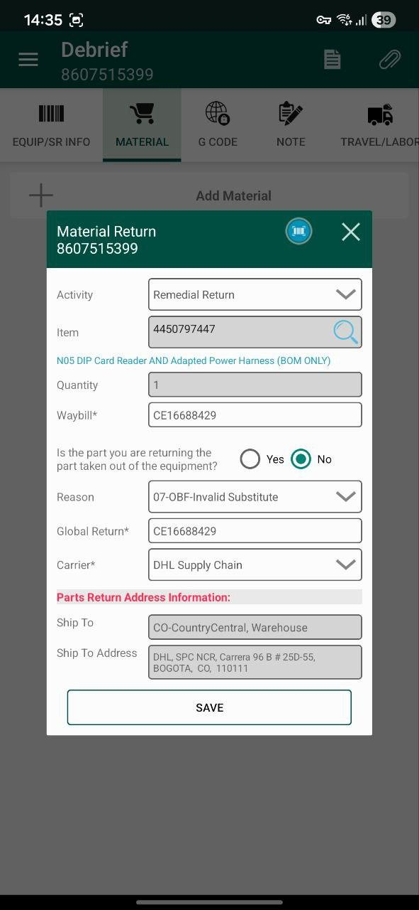
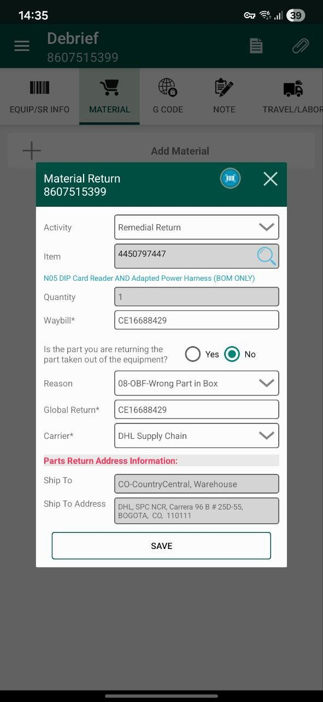

Herramienta desarrollada para ayudar a los CE en campo para realizar la correcta tipificación de los Repuestos OBF y su diligenciamiento.
NOTA IMPORTANTE‼️
Se debe retornar la pieza marcada como OBF y dar aviso a TM via correo y Teams con foto del label de retorno. En el remark de la SR debe de quedar si se encuentra STICKER DE TSICO.
¿Cuál es el Motivo del OBF?
Seleccionó 02-OBF-NOT FUNCTIONAL
La pieza recibida no presenta ningún daño o defecto visible, pero al momento de ponerla en funcionamiento presenta problemas para realizar su normal funcionamiento.
Se selecciona la opcion NO

Se selecciona la opcion 02-OBF-NOT FUNCTIONAL

Se diligencia los campos disponibles

Es de vital importancia que la parte quede con el label diligenciado de forma correcta, para que el proveedor realice la validación y se escale al reparador en caso que tenga sticker de TSICO

Seleccionó 03-OBF-PHYSICAL DAMAGE
La pieza recibida muestra daños visibles en uno o más componentes.
Se selecciona la opcion NO
Se selecciona la opcion 03-OBF-PHYSICAL DAMAGE
Se diligencia los campos disponibles
Es de vital importancia que la parte quede con el label diligenciado de forma correcta, para que el proveedor realice la validación y se escale al reparador en caso que tenga sticker de TSICO
Seleccionó 04-OBF-INCOMPLETE ASSEMBLY
La pieza recibida está en condiciones correctas, pero el FRU no está completa.
Se selecciona la opcion NO
Se selecciona la opcion 04-OBF-INCOMPLETE ASSEMBLY
Se diligencia los campos disponibles
Es de vital importancia que la parte quede con el label diligenciado de forma correcta, para que el proveedor realice la validación y se escale al reparador en caso que tenga sticker de TSICO
Seleccionó 05-OBF-POOR CONDITION/DIRTY
La pieza recibida no tiene condiciones óptimas para ser instalada o está sucia
Se selecciona la opcion NO
Se selecciona la opcion 05-OBF-POOR CONDITION/DIRTY
Se diligencia los campos disponibles
Es de vital importancia que la parte quede con el label diligenciado de forma correcta, para que el proveedor realice la validación y se escale al reparador en caso que tenga sticker de TSICO
Seleccionó 06-OBF-INCORRECT FIRMWARE
La pieza recibida presenta problemas con el firmware.
Se selecciona la opcion NO
Se selecciona la opcion 06-OBF-INCORRECT FIRMWARE
Se diligencia los campos disponibles

Es de vital importancia que la parte quede con el label diligenciado de forma correcta, para que el proveedor realice la validación y se escale al reparador en caso que tenga sticker de TSICO
Seleccionó 07-OBF-INVALID SUBSTITUE
La pieza recibida es diferente al número de pieza solicitado y el sustituto no es adecuado
Se selecciona la opcion NO
Se selecciona la opcion 06-OBF-INCORRECT FIRMWARE
Se diligencia los campos disponibles

Es de vital importancia que la parte quede con el label diligenciado de forma correcta, para que el proveedor realice la validación y se escale al reparador en caso que tenga sticker de TSICO
Seleccionó 08-OBF-WRONG PART IN BOX
La pieza recibida tiene un número de pieza diferente al número de pieza en la etiqueta de la caja
Se selecciona la opcion NO
Se selecciona la opcion 06-OBF-INCORRECT FIRMWARE
Se diligencia los campos disponibles

Es de vital importancia que la parte quede con el label diligenciado de forma correcta, para que el proveedor realice la validación y se escale al reparador en caso que tenga sticker de TSICO